MCP Architecture Overview
A detailed exploration of the components, interfaces, transport protocols, and data schemas that drive the Model Context Protocol.
1. The Client-Host-Server Triad
To understand how the Model Context Protocol functions, we must look at its architectural relationship. MCP breaks communication down into three clear roles: the **Host**, the **Client**, and the **Server**.
- The Host: This is the user-facing application (e.g., Claude Desktop, VS Code, Cursor, or a custom Python script) that coordinates the AI's workspace. The Host decides *when* to invoke the model and *when* to execute a tool.
- The Client: The module running inside the Host that handles connection sessions, parses data structures, and translates inputs and outputs between the LLM and the servers.
- The Server: Small, dedicated scripts or applications that connect to databases, read local files, or query APIs. Servers do not communicate directly with the LLM; they interact only with the Client.
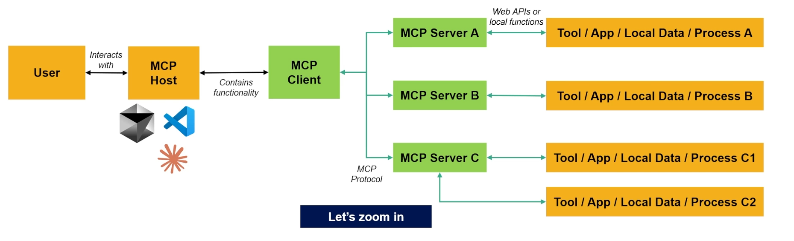
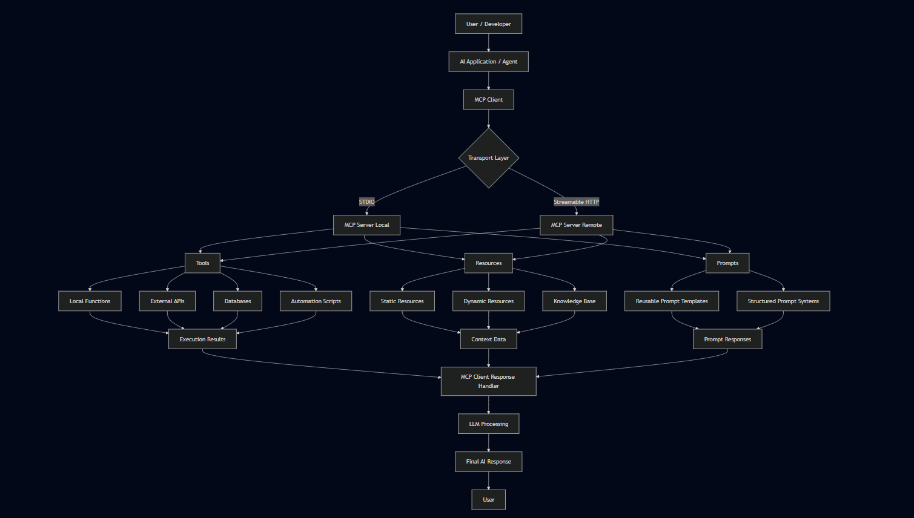
JSON-RPC 2.0 Communication
All messages between the Client and Server use the **JSON-RPC 2.0 specification**. This is a lightweight, stateless protocol that specifies:
- Requests: Client messages expecting a response (e.g. `tools/list` or `tools/call`). They contain an `id`, a `method`, and a `params` dictionary.
- Responses: Server messages returning output or errors matching the request's `id`.
- Notifications: One-way status messages (like logging data or resource notifications) that do not require response packets.
2. Multi-Server MCP Architecture
A powerful aspect of MCP is **Session Multiplexing**. A single AI Client (like Claude Desktop) is not limited to communicating with one server. Instead, it can establish connection sessions with multiple local and remote servers simultaneously.
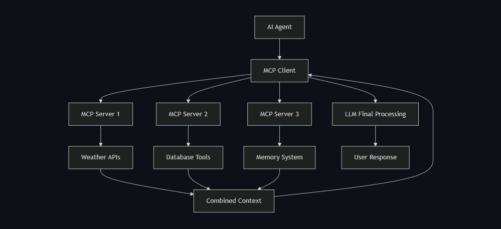
When you start your AI Host, the Client connects to all registered servers and compiles their capabilities. If Server A exposes weather tools and Server B exposes database search tools, the client combines these tool lists and presents them to the LLM. When the model outputs a tool call request, the client routes the request to the specific server that registered it.
3. Advanced MCP Architecture
Behind the scenes, the protocol establishes strict protocols for session negotiation, message serialization, and transport adapters.
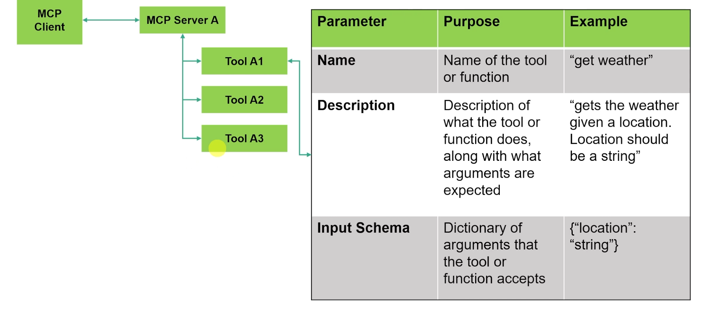
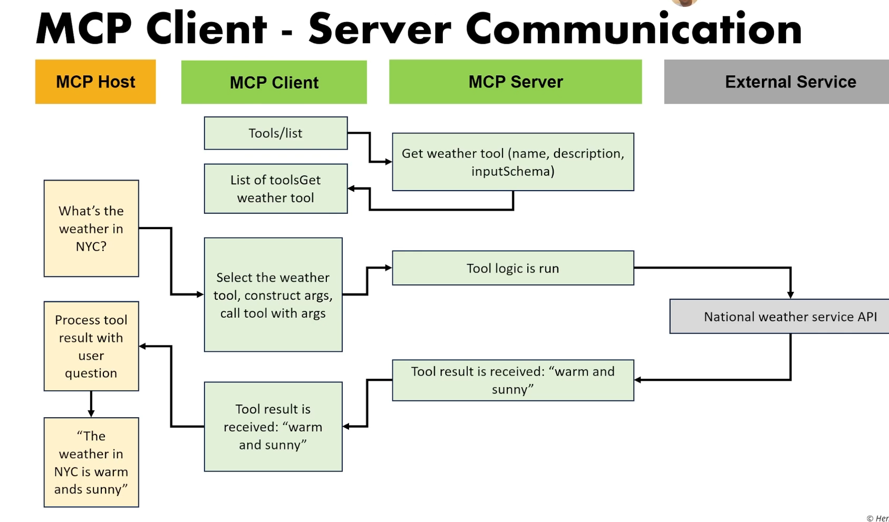
The transport layer handles encoding and decoding of JSON-RPC frames, which is separate from the application logic. This separation of concerns makes it easy to swap out transport layers (like replacing local stdio piping with a remote web socket) without modifying your tool definitions.
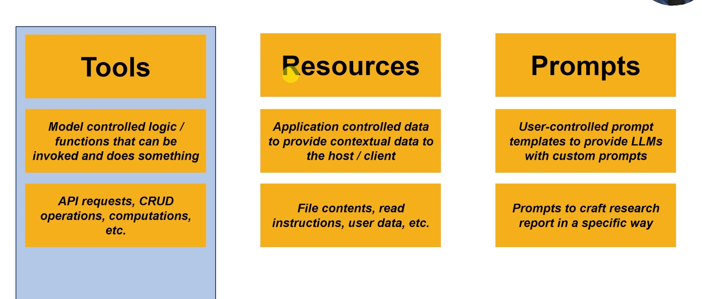
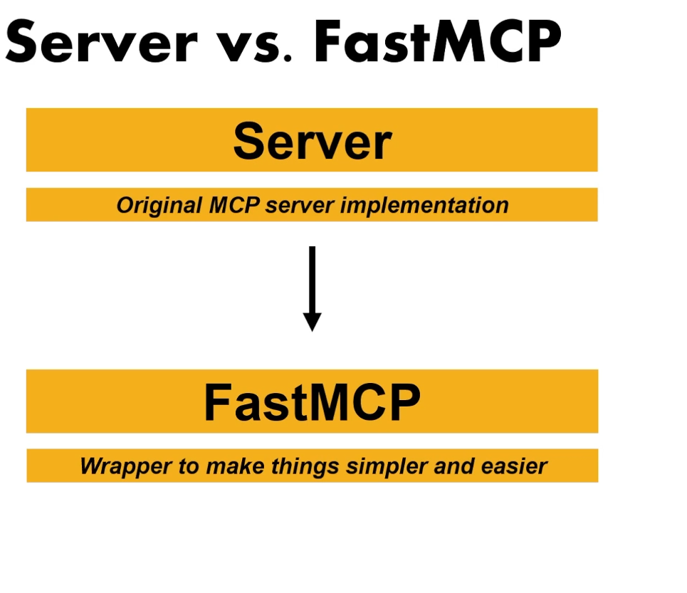
4. MCP Server Primitives
The Model Context Protocol divides capabilities into three primary interface primitives, which servers can choose to expose:
🛠️ 1. Tools (Executable Operations)
Tools are executable functions exposed by the server. They allow the AI model to perform actions and write back to external systems (e.g., executing a SQL query, taking a screenshot, or searching the web). Tools are:
- Model-Controlled: The model decides *when* and *with what parameters* to call a tool based on the user's prompt.
- Strictly Typed: Parameters are described using standard JSON Schema. FastMCP generates this schema automatically from Python function type hints.
📂 2. Resources (Read-Only Context)
Resources are static or dynamic data points that provide read-only context. Examples include files, database tables, or real-time server logs.
- URI-Based Access: Resources are queried using custom URI schemes (e.g.,
file:///logs/today.txtordatabase://orders/latest). - Dynamic Templates: Resources can use parameterized templates (e.g.,
inventory://{item_id}/price), allowing servers to resolve values on the fly.
📝 3. Prompts (Guided Interaction Templates)
Prompts represent reusable prompt templates or system roles exposed by the server (e.g., "Code Reviewer" or "SQL Expert"). They allow servers to supply pre-structured prompt contexts directly to the client, simplifying complex agent workflows.
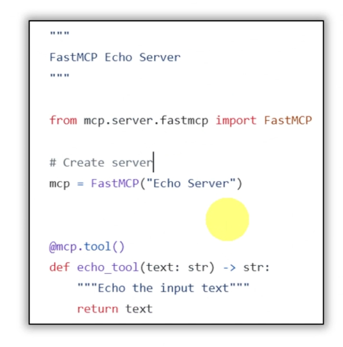
5. FastMCP vs. Low-Level Server API
When developing MCP servers in Python, you can choose between two main development interfaces:
| Feature | FastMCP (High-Level API) | Server (Low-Level API) |
|---|---|---|
| Code Complexity | Extremely simple; uses standard decorators. | Complex; requires manual session management. |
| Schema Generation | Automatic; parsed from Python type hints & docstrings. | Manual; must write raw JSON schemas. |
| Setup Speed | Fast; run a server in under 10 lines of code. | Slow; requires managing async message loops. |
| Flexibility | Excellent; covers 95% of typical use cases. | Maximum; allow custom JSON-RPC routers. |
💡 Recommendation: Always Use FastMCP
Always use FastMCP wherever possible. It is a powerful abstraction that supports most features out-of-the-box, reduces boilerplate code by 90%, and is actively supported by the community and the open-source project.
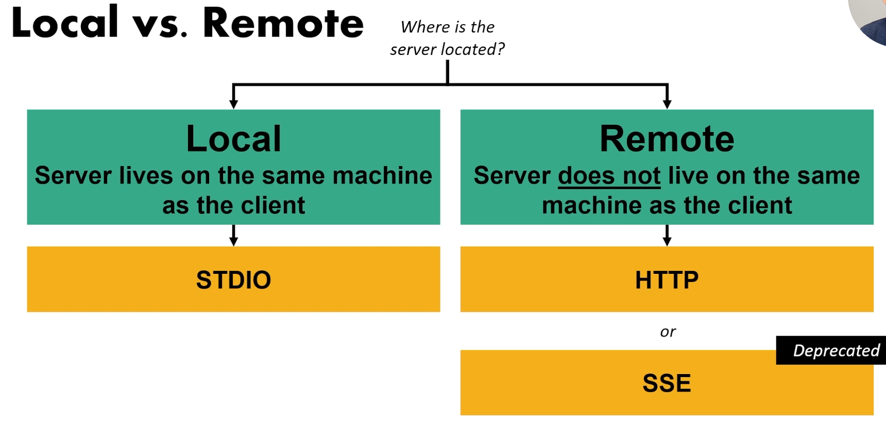
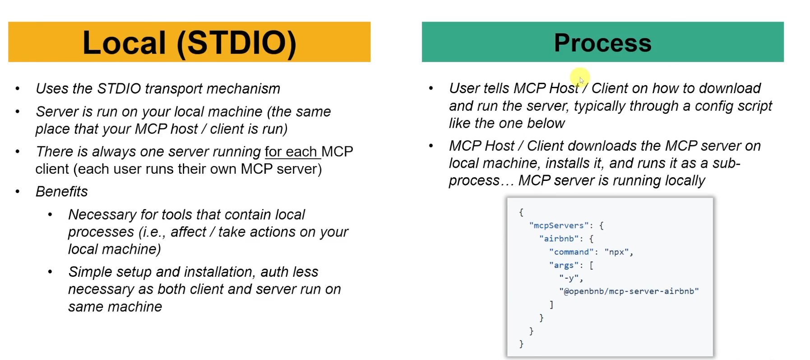
6. Local vs. Remote MCP
Depending on where your server runs, MCP supports two main modes:
- Local MCP (stdio): The server runs as a local background process spawned by the client. Communication happens through standard input (stdin) and standard output (stdout) pipes. It is secure, requires no network setup, and is the default for desktop integrations.
- Remote MCP (Streamable HTTP): The server runs as an independent web service. It uses HTTP SSE (Server-Sent Events) to push messages to the client and receives client requests via standard HTTP POST calls. Useful for cloud hosting and SaaS databases.
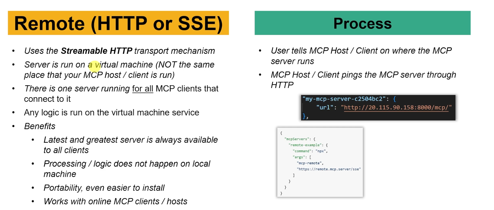